Welcome! I started doing pottery in the beginning of 2022, and it's been a fun way for me to express my thoughts. Doing things that are explicitly creative is still pretty new to me, and I'm always exploring new forms and techniques. I believe that we can all create and I hope to create things that are genuine and honest to oneself!
2023
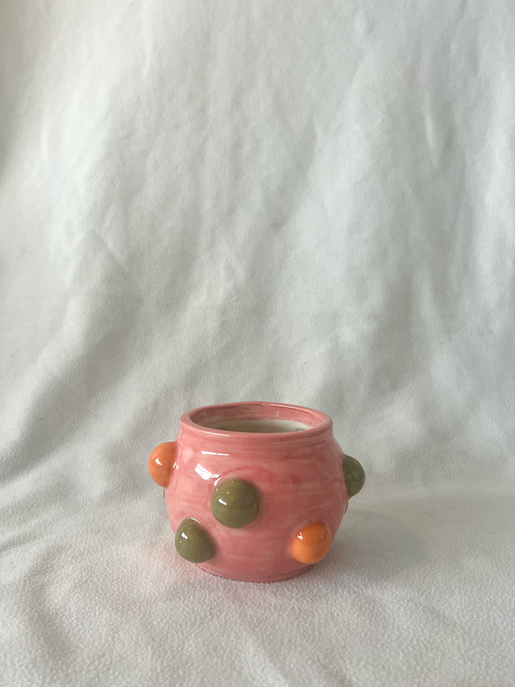
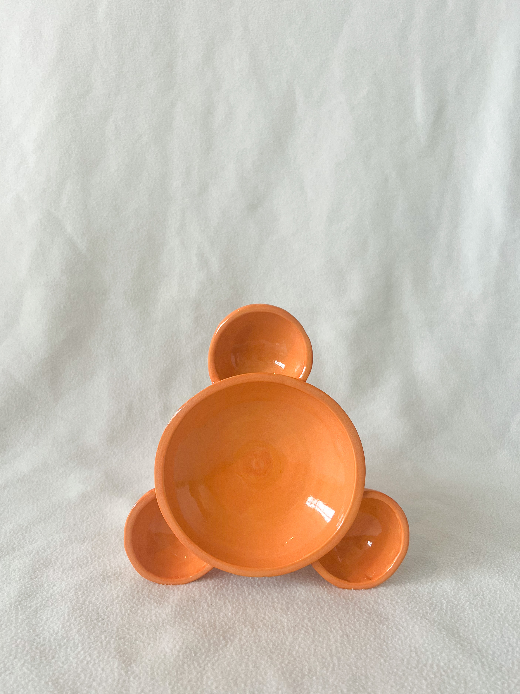
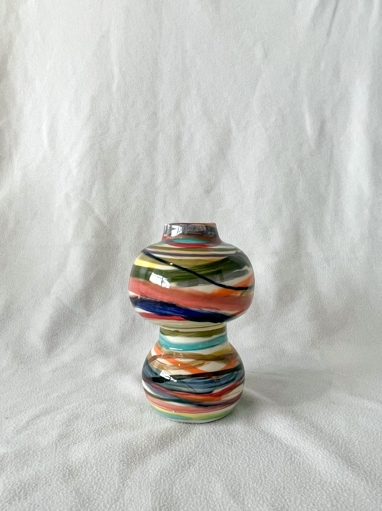
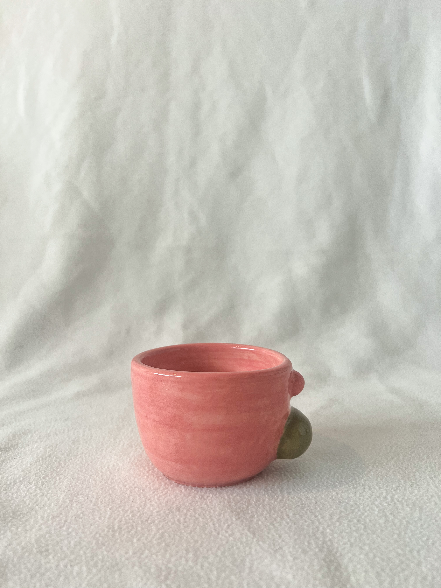
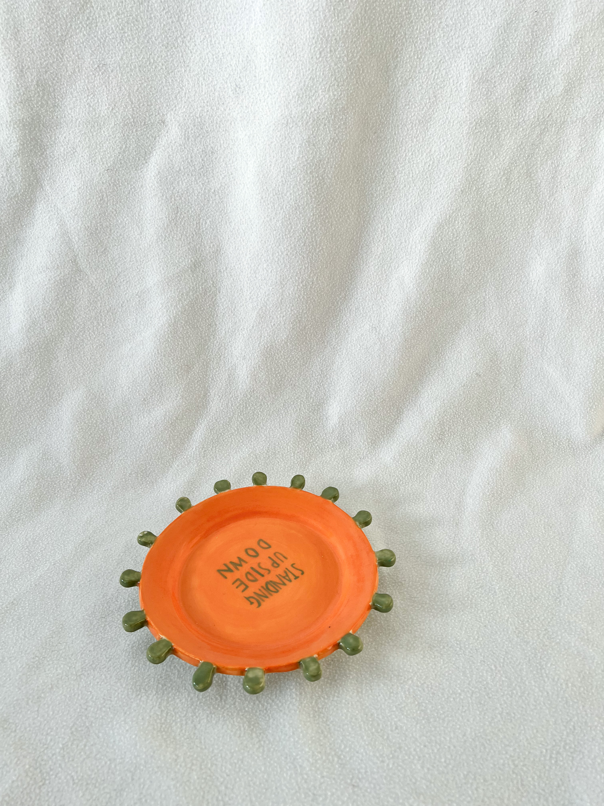
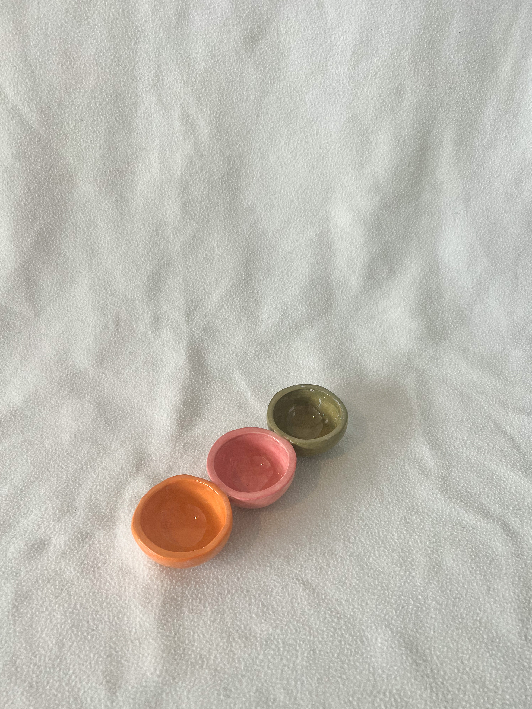
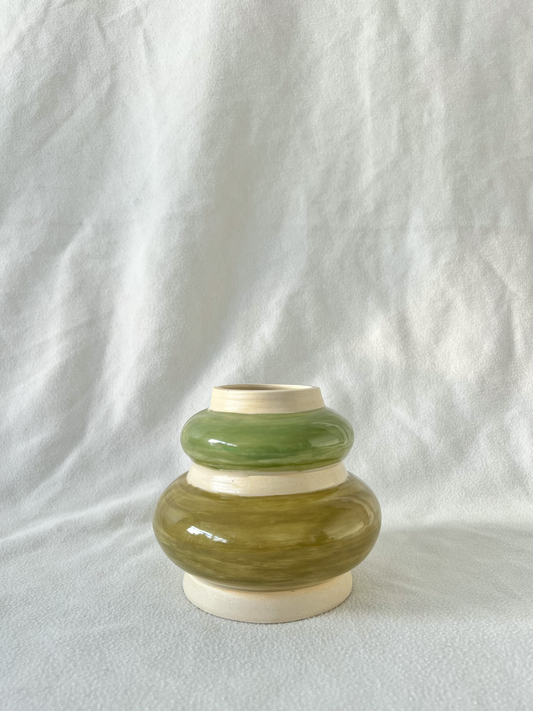
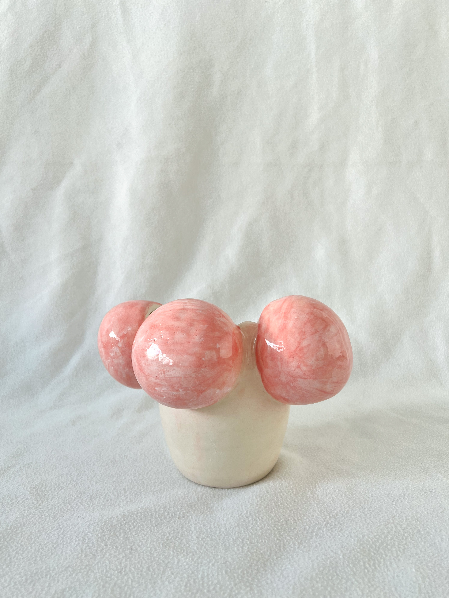
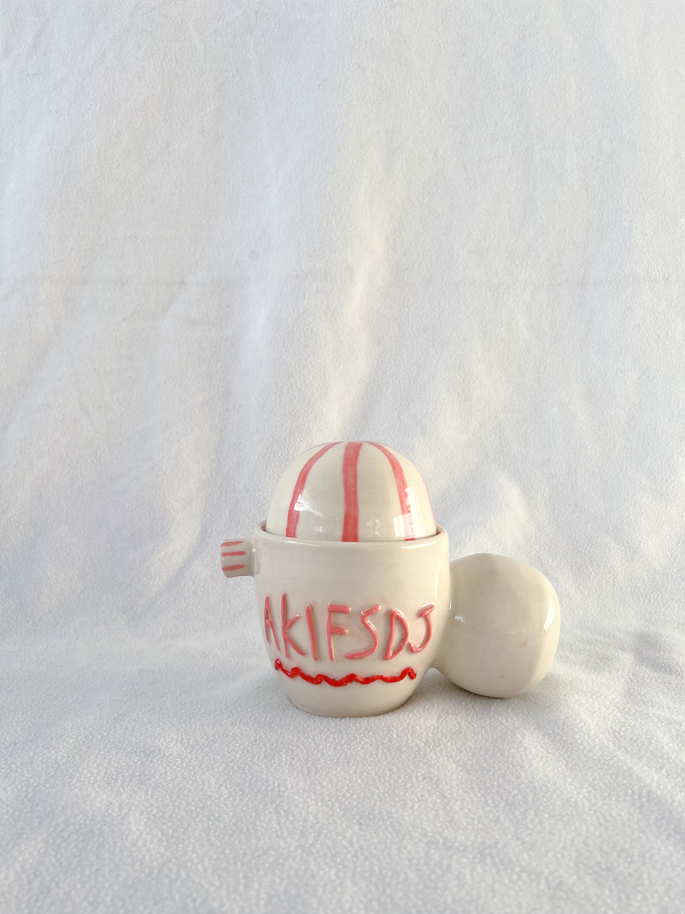
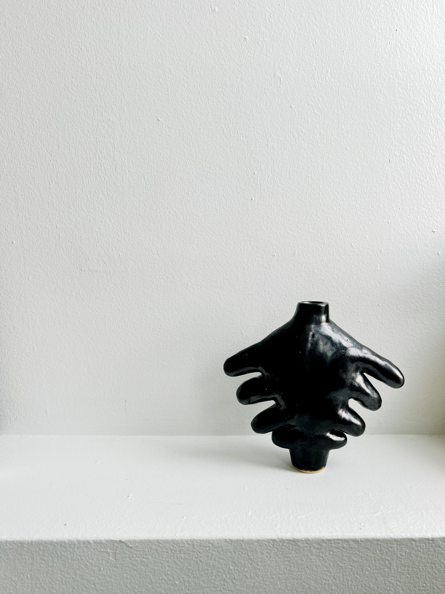
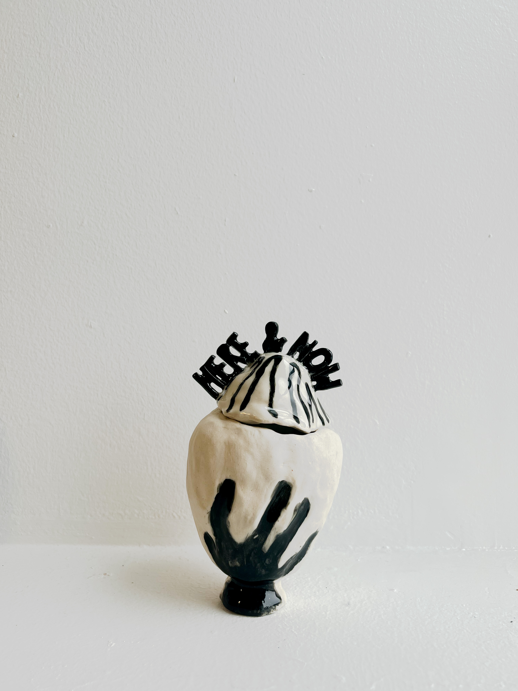